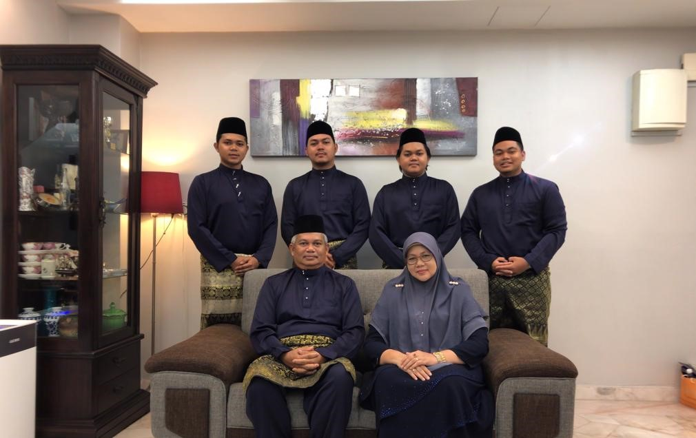

MY FAMILY
BIODATA
EXPERIENCES
EDUCATION
AIMAN ABDULLAH

My name is Muhammad Aiman bin Abdullah and usually people just call me Aiman.Sometimes My friends just call me “Man”.I am 18 years old.Actually,I was born at Kedah Darul Aman but when I am 3 years old,My family decided move to Selangor Darul Ehsan because my father’s work.Even I have been grow up at selangor but I still can speak in Kedah accent and also selangor accent.I live at Damansara Damai,Sungai Buloh,Selangor Darul Ehsan.